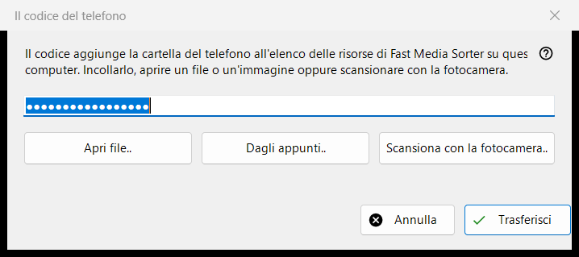
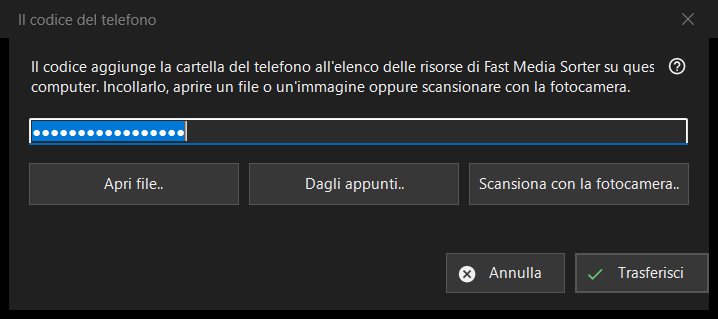

Il codice del telefono
Scopo
Riceve un codice di connessione generato dall'app del telefono e lo passa a Fast Media Sorter, che aggiunge la cartella del telefono al proprio elenco delle risorse su questo computer. Si apre dal pulsante «Codice telefono..» della finestra principale di Share Manager.


In questo ordine
- Porta il codice nella finestra in uno di quattro modi: digitalo o incollalo nella casella, premi «Apri file..», premi «Dagli appunti..» oppure premi «Scansiona con la fotocamera..».
- Premi «Trasferisci».
- Conferma l'aggiunta della cartella nella finestra di Fast Media Sorter che compare.
Gli elementi
Codice di connessione
Una casella a riga singola che mostra dei puntini al posto dei caratteri, perché il codice è un segreto; non viene mai scritto in un registro. Se premi «Trasferisci» con la casella vuota, ti viene chiesto di digitare il codice, incollarlo oppure aprire un file o uno screenshot.
File, appunti e fotocamera
«Apri file..» legge file .fmscfg, .json e .txt e immagini QR (.png, .jpg, .jpeg, .bmp, .webp); un file si può anche trascinare sulla finestra. «Dagli appunti..» legge il codice dagli appunti. «Scansiona con la fotocamera..» apre la finestra della fotocamera e il testo scansionato viene trattato come se fosse stato incollato.
Trasferisci
Il codice viene controllato e poi inviato a Fast Media Sorter in esecuzione, la cui finestra di importazione pone comunque le sue consuete domande. In caso di successo lo stato riporta «Il codice è stato trasferito: confermare l'aggiunta nella finestra di Fast Media Sorter.» e questa finestra si chiude. Se Fast Media Sorter non viene trovato, è una versione precedente o non risponde, il codice viene messo negli appunti con i marcatori di riservatezza e la riga di stato invita a incollarlo con «Importa dagli appunti» nel pannello delle risorse.
Messaggi nella riga di stato
Un documento che non è un codice di connessione né un file di impostazioni delle risorse viene segnalato come illeggibile. Un file creato da una versione più recente chiede di aggiornare Fast Media Sorter. Se un altro programma tiene occupati gli appunti, lo stato lo dice.
Impostazioni del gestore · Impostazioni condivisione SFTP · Impostazioni server di scambio